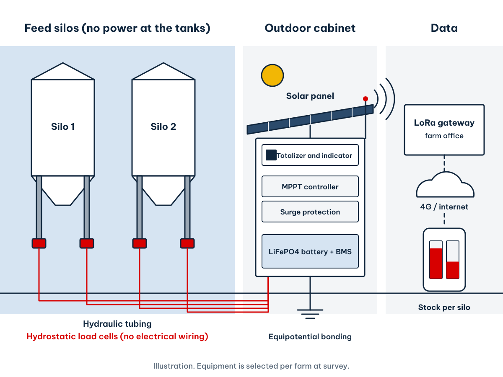
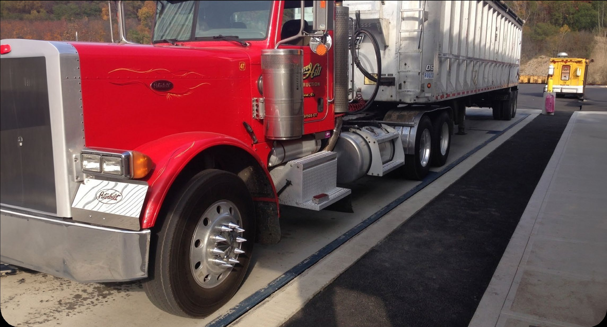

Emery Winslow Scale · 136 Series LifeMount
静压式称重传感器
每个 Emery Winslow 系统都始于这个传感器：一个不锈钢活塞-膜片单元，无电子元件、无接线盒，称重点处没有任何电气部件。载荷转化为流体压力，信号通过管路传送到位于洁净干燥房间内的求和总计仪（Summing Totalizer）。
“Never Replace Your Load Cells Again!”（无需再更换称重传感器！）
这是 Emery Winslow Scale Company 为其静压式称重传感器提出的自家口号。

为什么选择 Emery Winslow
数十年来，静压称重一直是 Emery Winslow 的专长。用厂家自己的说法，其与众不同之处在于：
秤体处无电子元件
静压式称重传感器将重量转化为流体压力。不锈钢管路将其传送到洁净干燥区域的求和总计仪（Summing Totalizer）；只有在那里，它才转化为电子信号。
为水、高压冲洗、雷击和电涌而设计
厂家列出了其称重传感器旨在抵御的失效原因，包括水、高压冲洗、雷击、电涌、啮齿动物以及 RFI/EMI。
不锈钢结构
不锈钢称重传感器（304，136 Series 可选 316）和 316 不锈钢管路，适用于腐蚀性和卫生要求高的区域。
持续准确，使用寿命更长
Emery Winslow 表示，在严苛环境现场，其称重持续准确，使用寿命比电子称重传感器更长。
长期运行成本更低
据厂家称，紧急维修呼叫更少、停机时间更短、称重传感器更换更少。
美国制造，源于 1868 年
源于 1868 年创立的 A.H. Emery Company；1974 年与 Winslow（1896 年创立）合并。在康涅狄格州 Seymour 的制造中心生产。
优势引自 Emery Winslow Scale Company 的说明：Hydrostatic Weighing Systems 宣传册（06-15-2026）、120 和 136 Series 资料页，以及 emerywinslow.com/about.

关于制造商
Emery Winslow Scale Company 在美国康涅狄格州 Seymour 生产静压称重系统。其称重传感器不含电子元件：重量转化为流体压力，不锈钢管路将其传送到洁净区域的求和总计仪（Summing Totalizer），只有在那里才转化为供称重显示器使用的电子信号。
HearS 向越南的工业客户提供 Emery Winslow 系统，并由我们的团队提供选型、项目工程和安装支持。本页所列解决方案是 Emery Winslow 要求 HearS 重点推广的方案。
罐体、料斗和容器秤


汽车衡和轴重秤



地面秤


电子与静压称重传感器对比（按厂家公布）
| 关键事项 | 电子称重传感器 | Emery Winslow 静压式 |
|---|---|---|
| 水损 | 易受损 | 秤体处无电子元件可受损 |
| 雷击 | 易受损 | 秤体处无电子元件可受损 |
| 高压冲洗 | 失效风险高 | 专为此而设计 |
| 停机时间 | 频繁 | 罕见 |
| 维护 | 持续支出 | 极少 |
| 全生命周期成本 | 反复支出 | 总拥有成本更低 |
对比引自 Emery Winslow Scale Company 在其 Hydrostatic Weighing Systems 宣传册（06-15-2026）中公布的内容。
一个称重传感器失效的代价
Emery Winslow 用一个实例说明电子秤的隐性成本：一家禽类加工厂每年发生 4 次称重传感器故障，每次维修成本 USD 2,500、停机 8 小时，生产影响为每小时 USD 1,500。
即维修 USD 10,000 加停机 USD 48,000：每年 USD 58,000。这些数字是厂家的示例，并非 HearS 的实测；我们可以用您自己的数字做同样的测算。
- 厂家提及的行业：肉类、禽类、海鲜、乳制品和食品加工
- 化工、溶剂和腐蚀性冲洗环境
- 骨料、回收、沥青、采矿和钢铁
- 制药和卫生生产；24/7 全天候运营

来自严苛现场的实证
Emery Winslow 公布的八个案例研究，从每晚冲洗的肉类工厂到浸在水中的称重传感器。
产品图片

图片：Emery Winslow Scale Company 
图片：Emery Winslow Scale Company 
图片：Emery Winslow Scale Company
按行业的应用
来源：Emery Winslow Scale Company 宣传册（Hydrostatic Weighing Systems，06-15-2026；120 Series 和 136 Series 资料页，修订于 02-16-2026）。以厂家现行数据表为准。
保修条款、交付以及在越南使用所需的任何批准，均在每份 HearS 报价中确认。
文档与支持
讨论一套 Emery Winslow 系统
告诉我们您需要称量什么，以及现场目前对秤造成了什么影响。